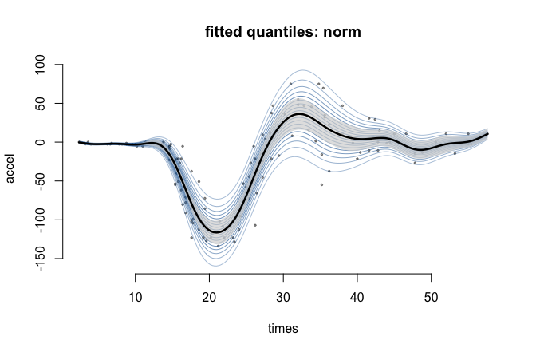

Distributional (GAMLSS-style) regression where smooth terms can enter every parameter of a distribution, not just the mean.
The package is mostly glue, by design:
-
mgcv builds the bases and penalties, and
mgcv::smooth2random()reparameterises the penalized coefficients as iid Gaussian random effects; - RTMB supplies automatic differentiation and the Laplace approximation;
-
RTMBdist supplies the log-densities, each in its own native parameterisation — a skew normal is modelled as
xi,omega,alpha, not as generic location/scale/shape.
Restricted maximum likelihood is the default, effective degrees of freedom per smooth agree with mgcv, and smoothing parameters can be shared between terms and between distributional parameters.
Installation
# install.packages("pak")
pak::pak("janolefi/gamRTMB")Example
MASS::mcycle measures head acceleration in a simulated motorcycle crash. The mean is famously hard to model — and the variance changes just as much.
library(gamRTMB)
data(mcycle, package = "MASS")
fit <- gamRTMB(accel ~ list(mean = ~ s(times, k = 20),
sd = ~ s(times, k = 10)),
data = mcycle)
summary(fit)
#>
#> Family: norm [dnorm from RTMB]
#> Links: mean = identity, sd = log
#>
#> Formula:
#> mean ~ s(times, k = 20)
#> sd ~ s(times, k = 10)
#>
#> Parametric coefficients:
#> Estimate Std. Error z value Pr(>|z|)
#> mean:(Intercept) -25.21806 1.85310 -13.61 <2e-16 ***
#> sd:(Intercept) 2.58334 0.06443 40.10 <2e-16 ***
#> ---
#> Signif. codes: 0 '***' 0.001 '**' 0.01 '*' 0.05 '.' 0.1 ' ' 1
#>
#> Smooth terms:
#> term edf k sp
#> mean:s(times) 14.382 19 2.893e-06
#> sd:s(times) 7.150 9 0.009119
#>
#> Total EDF = 23.53 n = 133
#> -REML = 587.275 logLik = -532.303 AIC = 1111.67Once every parameter varies, the useful output is covariate-dependent quantiles rather than a mean and one standard error:
plot(fit, type = "quantile")
Term plots, a worm plot of randomised quantile residuals, and everything else are in vignette("gamRTMB").
What it does
| Families | 85, from RTMBdist plus the standard R densities; families() lists them, fam() builds one |
| Formula |
y ~ list(mean = ~ s(x), sd = ~ s(z)), one one-sided formula per parameter, missing ones get ~1
|
| Smooths |
s(), t2(), by=, bs="fs", bs="re", shrinkage bases, and id= to share smoothing parameters |
| Criterion | REML by default (coefficients integrated out by the same Laplace approximation), or ML |
| Inference |
summary(), vcov(), edf(), AIC()/BIC(), predict() with standard errors |
| Diagnostics |
residuals() gives randomised quantile residuals; plot(type = "worm")
|
| Also |
weights, offset() inside a parameter’s formula, na.action
|
Status
Early but checked. EDF and fitted values agree with mgcv::gam(family = gaulss()) to three decimals, with and without shared smoothing parameters; predict() on the fitting data reproduces the in-sample linear predictors to machine precision; and quantile standard errors match both an analytic special case and simulation from the joint posterior.
Not supported: te() (mgcv itself declines smooth2random(type = 2) for it — use t2()), fx = TRUE, and smooths whose unpenalized null spaces overlap (use a shrinkage basis, bs = "ts"). Not yet implemented: smooth-term p-values, 2-D smooth plots, and an extended Fellner–Schall fitting engine as an alternative to the Laplace one — dev/NOTES-fellner-schall.md records the derivation and the seams it needs.